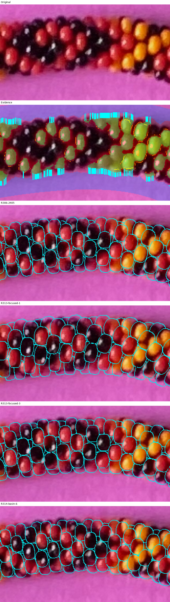
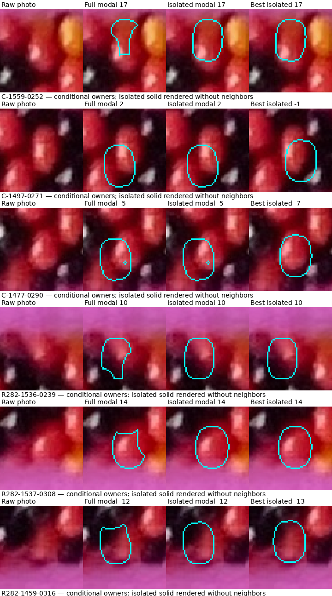
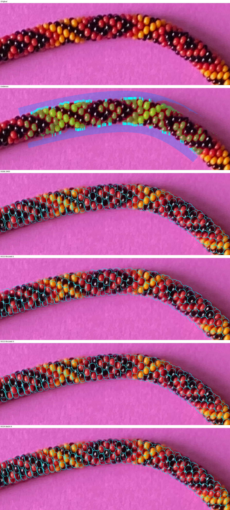
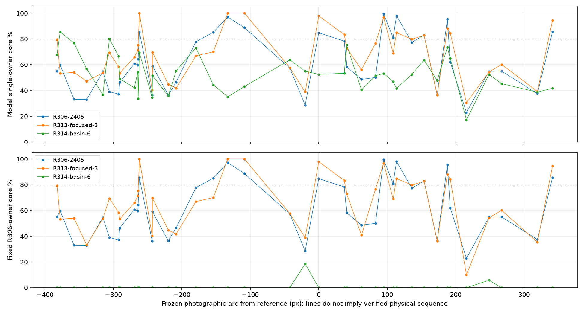
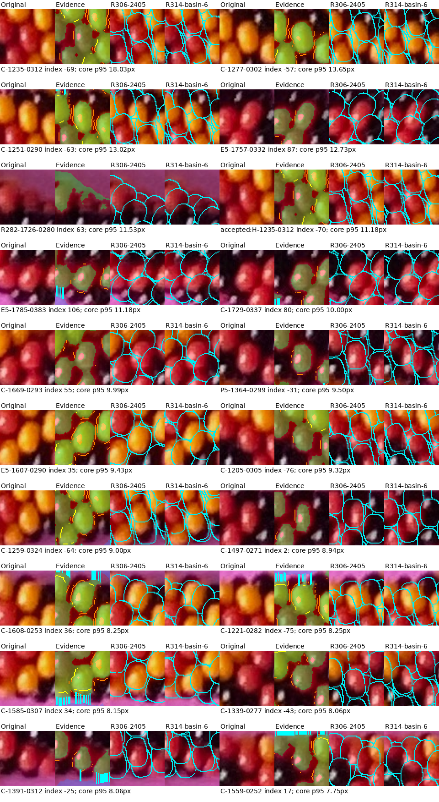

Raw photograph is unchanged. Green = confident colored material; blue = confident paper; orange = persistent transitions; yellow = color-supported seams; cyan lines in Evidence = material-to-paper boundary brackets. Cyan model lines = all visible surface interfaces, including bore and occlusion edges; they are predictions, never observed black silhouettes. Physical target is exactly −100…99; all necklace bodies participate in contact and occlusion.
The illustrated R314 candidate is a diagnostic tradeoff selected by geometric violation, not an accepted reconstruction. Geographic plots use fixed photo locations. Fixed-owner plots expose reassignment. Exterior bracket p95 includes a 50px penalty for a missing boundary in the extended scan, not a measured 50px error. Comparison regions are historically exposed. Peak minimax is not claimed without convincing geometry and correspondences.
Report · Reproduce · Independent verification · All corruption controls · Bright-feature readiness
| Model / geography | Material % | Paper % | One-body % | Exterior bracket p95 | Seam conflict % | Worst core p95 | Accepted |
|---|---|---|---|---|---|---|---|
| R306-2405 / development | 90.02 | 0.15 | 69.77 | 9.00 | 44.72 | 13.60 | False |
| R306-2405 / comparison | 88.90 | 1.54 | 55.87 | 50.00 | 37.31 | 9.85 | False |
| R309-2733 / development | 87.64 | 0.11 | 62.83 | 10.00 | 31.71 | 13.66 | False |
| R309-2733 / comparison | 88.86 | 1.43 | 69.62 | 50.00 | 37.31 | 7.62 | False |
| R312-best / development | 89.77 | 0.19 | 71.02 | 10.00 | 43.09 | 12.73 | False |
| R312-best / comparison | 88.38 | 1.78 | 58.74 | 50.00 | 34.33 | 9.29 | False |
| R312-local / development | 87.42 | 0.11 | 63.58 | 50.00 | 43.09 | 13.38 | False |
| R312-local / comparison | 81.74 | 0.78 | 48.60 | 50.00 | 55.22 | 19.76 | False |
| R313-focused-1 / development | 97.18 | 2.16 | 68.36 | 4.00 | 65.04 | 8.60 | False |
| R313-focused-1 / comparison | 96.41 | 4.04 | 61.35 | 9.00 | 62.69 | 17.00 | False |
| R313-focused-3 / development | 92.01 | 0.35 | 74.02 | 8.00 | 50.41 | 11.00 | False |
| R313-focused-3 / comparison | 91.51 | 2.15 | 64.86 | 23.40 | 32.84 | 8.54 | False |
| R314-basin-1 / development | 86.79 | 0.06 | 58.30 | 10.00 | 33.33 | 10.44 | False |
| R314-basin-1 / comparison | 85.60 | 0.36 | 50.08 | 50.00 | 40.30 | 15.81 | False |
| R314-basin-2 / development | 88.84 | 0.03 | 73.35 | 10.70 | 32.52 | 10.63 | False |
| R314-basin-2 / comparison | 90.27 | 0.90 | 62.74 | 50.00 | 37.31 | 9.00 | False |
| R314-basin-3 / development | 91.18 | 0.03 | 67.54 | 10.00 | 28.46 | 10.01 | False |
| R314-basin-3 / comparison | 91.68 | 0.72 | 56.18 | 50.00 | 23.88 | 12.65 | False |
| R314-basin-4 / development | 87.13 | 0.15 | 62.40 | 10.70 | 35.77 | 10.63 | False |
| R314-basin-4 / comparison | 84.74 | 1.15 | 44.01 | 50.00 | 41.79 | 14.00 | False |
| R314-basin-5 / development | 91.46 | 0.23 | 63.19 | 10.00 | 32.52 | 10.27 | False |
| R314-basin-5 / comparison | 92.30 | 1.24 | 60.95 | 22.70 | 35.82 | 18.36 | False |
| R314-basin-6 / development | 88.65 | 0.29 | 57.33 | 10.00 | 30.08 | 9.99 | False |
| R314-basin-6 / comparison | 90.44 | 1.81 | 49.87 | 50.00 | 43.28 | 18.03 | False |




